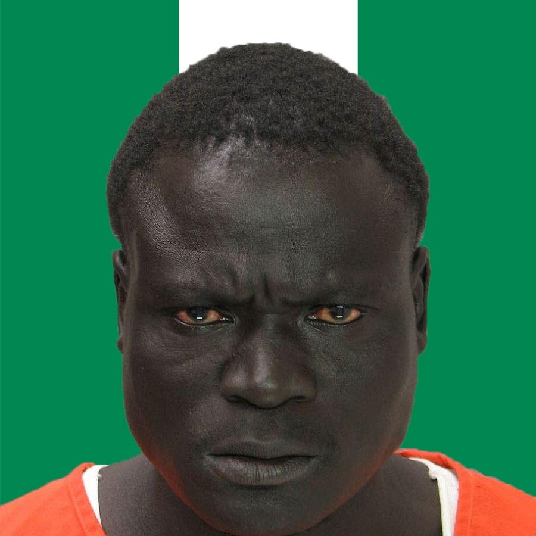

<!DOCTYPE html>
<html lang="en">
<head>
    <meta charset="UTF-8">
    <meta name="viewport" content="width=device-width, initial-scale=1.0">
    <title>Document</title><link rel="stylesheet" href="index.css">
</head>
<body>
    
</body>
</html>
<a href="#openModal">Открыть модальное окно</a>
<div id="openModal" class="modal">
    <div class="modal-dialog">
      <div class="modal-content">
        <div class="modal-header">
          <h3 class="modal-title">черный</h3>
          <a href="#close" title="Close" class="close"></a>
        </div>
        <div class="modal-body">    
         </IMg>
        </div>
      </div>
    </div>
  </div>
<div class="container">
    <div class="absolute-element">Абсолютный элемент</div>
  <h1> <a name="ontop"></a></h1>
</div>
   
      
        <div class="fixed-banner">он был низким</div>

    </div>

    <h2 class="sticky-header">Липкий заголовок</h2>
    <p>Много текста...</p>
     
    <div class="cherni">
      <p>Чили: самый черный человек, который изменил мир
        Аслан по кличке Чили был самым черным человеком в мире. Он родился в Африке, в племени, где все жители были темнокожими. Его кожа была настолько черной, что он выглядел как уголь.
        
        С детства Аслан был очень сильным и выносливым. Он мог бегать быстрее всех своих сверстников и поднимать самые тяжелые предметы. Но самое главное, что отличало его от других - это его характер. Он был очень добрым и отзывчивым человеком, который всегда готов помочь другим.
        
        Когда Аслан вырос, он решил отправиться в путешествие по миру. Он хотел увидеть как можно больше стран и познакомиться с разными людьми. Он путешествовал по Европе, Азии и Америке, и везде его встречали с удивлением и восхищением.
        
        Однажды Аслан решил отправиться в Россию. Он знал, что там живут самые красивые и добрые люди в мире. Когда он приехал в Москву, его сразу же заметили местные жители. Они были поражены его красотой и необычным цветом кожи.
        
        Аслан стал очень популярным в России. Он выступал на концертах, участвовал в различных шоу и даже снимался в кино. Но самое важное, что он делал - это помогал людям. Он помогал бедным и больным, устраивал благотворительные акции и поддерживал тех, кто нуждался в помощи.
        
        Так прошло несколько лет. Аслан стал не только самым черным человеком в мире, но и настоящим героем. Он продолжал путешествовать по миру, помогать людям и делать добрые дела. И никто не мог сравниться с ним по красоте и доброте.</p>
      </div>
      <p><a href="#ontop">В начало</a></p>
</body>
</html>